Orientation Matters
Gestures should be tied to the orientation of the hand.
The same action has a very different feeling when your palm is facing you, and it also affects the positioning of the UI.
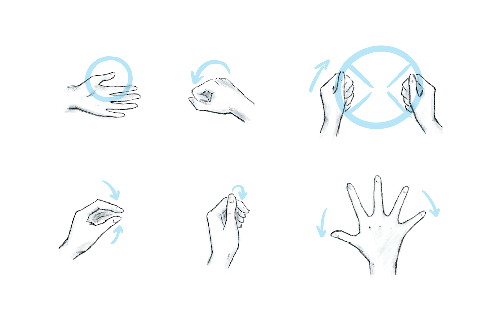
Independent · 2020
Explorations of gesture-based UI, prototyped in Unity with simple finger colliders for quick sketching and light playtesting.
I am not fond of large menu panels or over-relying on the "menu" button in VR. Gestures offer many opportunities to activate small, specific UI tools when you need them at arm's reach.
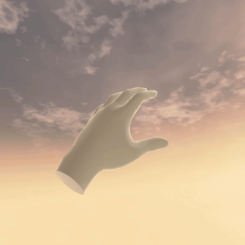
Close Fist
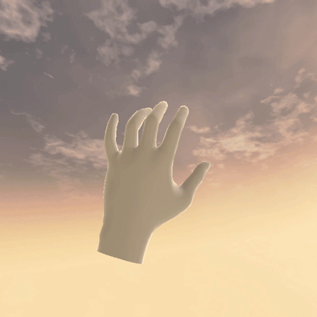
Stretch Palm
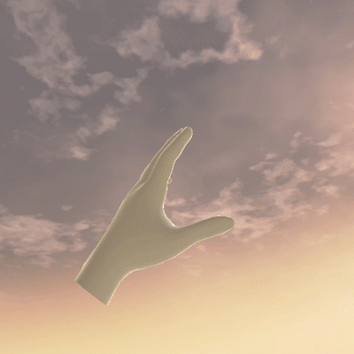
Pinch
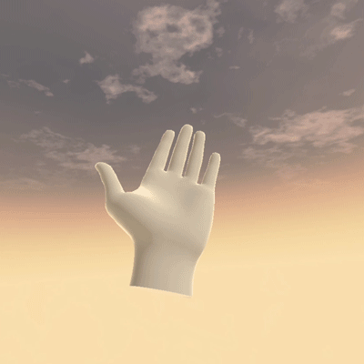
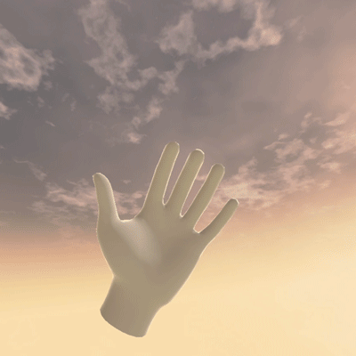
Orientation Matters
Gestures should be tied to the orientation of the hand.
The same action has a very different feeling when your palm is facing you, and it also affects the positioning of the UI.
Very specific actions can be created, especially when using both hands. We can also use comfortable hand positions for quick repeated actions, similar to a button press.
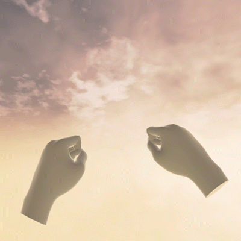
Picture Frame. Both hands make an "L", at a distance apart.

Steering Wheel. Both hands make a fist, at a distance apart.
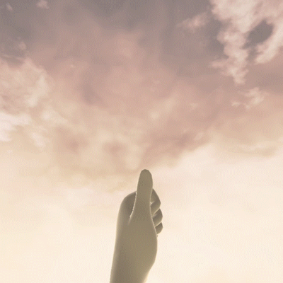
Thumb tap on knuckle with closed fist. More accurate than expected. Could replace a button press for browsing actions.

Palm-sized UI elements are great for things that benefit from the slight rotational tilt of the hand.
Combining Gestures
It's more reliable to use separate, distinct gestures as triggers for opening and closing UI.


A gesture can also open a large UI that doesn't fit directly on the hand.
Gestures & Feature Hierarchy
We can choose our gestures based on how easily we want to access a feature. A more specific gesture has higher friction to activate. It can also include more detailed secondary features like scaling.
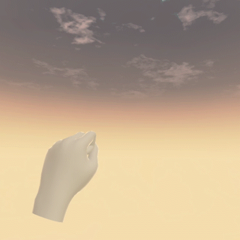
Single hand gesture makes this panel easy to access.
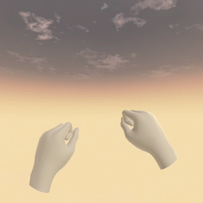
Two hands, bottom corners. Allows for scaling the panel.
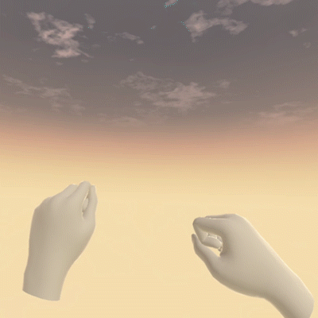
Two hands, diagonal corners. Allows for width + height scaling of the panel.
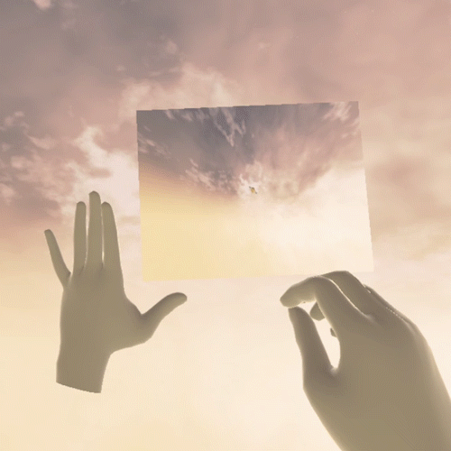
The second hand can be mapped to a related secondary feature. Here I mapped the finger pinch to the zoom (FOV) of the camera. Since there is not much distance between the fingers, smoothing the values using Lerp was essential.
Secondary gesture features can be aided with corresponding visual UI. Here, using the distance of the hand movement creates a push/pull motion mapped to zoom.
When Should We Use a Gesture?
A wrist UI button has already been proven in a variety of VR apps. It doesn't require fully tracked hands, so it is very flexible. If captions are a primary UI, it makes sense for them to be tied to the primary wrist button.
If captions are slightly less important, then the wrist UI can be opened with a gesture. This can also allow fitting in more features, like adjusting the size of text.